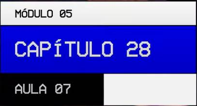

Créditos:
Propriedades de container para Grids (parte 3)
--:--Nesta aula vamos aprender mais algumas propriedades que se aplicam a um "container" do tipo "Grid Layout".
Créditos:
Nesta aula vamos aprender mais algumas propriedades que se aplicam a um "container" do tipo "Grid Layout".
Foco em grid-auto e shorthands.
"Observe"
as 3(três) últimas Propriedades pois elas são 'propriedades' simplificadoras, e servirá para que não precise ficar decorando as várias propriedades vistas a esquerda.
O exemplo que usamos durante a aula é o mesmo das aulas anteriores; Como podemos ver na imagem abaixo.
Observe que a Grid da aula é 3X3 (três por três), que são 9(nove) áreas onde as linhas amarelas destacam todo o container.
Abaixo o código HTML.
Abaixo o código base CSS para estilo do container;
"OBS
Atente para a adição do items "H e I" ao código HTML.
A maneira acima como podemos observar, faz com que os
items(celulas)/areas preencha completamente o Grid,
e a isso chamamos de "Grid explícito".
Quando adicionamos um novo item como é o exemplo (J), esperamos que ele preencha todo o 'grid', mas na prática não é isso que acontece pois o "Grid Explícito" que é o exemplo do código abaixo e está com definição para 3(três) colunas auto, e 3(três) linhas de 100 pixels.
Com essa configuração a Grid só cabe 9(nove) items, e ao adicionar o (J), ele passa a fazer parte do que chamamos de "Grid Implícito"; Ou seja não dá erro; Não fica escondido; Porém ele não foi definido ainda.
Por padrão um item_Implícito é adicionado a uma 'nova linha', mais não recebe as mesmas configurações (Explícitadas) das demais áreas.
O novo Item na verdade fica com as configurações padrões de Grid e respeita o limite do conteúdo que nesse caso é apenas um letra (J) e por isso aparece 'fininho' pois é pouco o conteúdo dessa área, como podemos ver na imagem abaixo:
O mais correto seria que uma nova área|item ocupasse a mesma dimensão que os demais items configurados, mas na prática isso não acontece pois para este exemplo as "nossas linhas" estão definidas com (100 pixels cada), e a definição para a 4ª(quarta) linha, não está configurada.
"Observação":
Adicionar o valor de 100/pixels para a possível "nova linha" também não é aconselhável, pois se não houver adição desse "novo item", então teremos na Grid uma área de 100/pixels "vazia".
Para que tenhamos um Grid_Implícito " que nesse caso é 3X3 = três linhas e três colunas "; Para que ao adicionarmos novas linhas e para que essas linhas tenham as mesmas definições configuradas, basta acrescentar a propriedade grid-auto-row como no exmeplo abaixo:
Assim para as novas linhas " seja item K, L, M etc " a(s) sua(s) definição(ões) seria(m) de 100pixels também, pois é o valor usado neste exemplo, como podemos ver no resultado na imagem abaixo:
"LEMBRANDO QUE":
Todas as novas linhas acrescentadas terão 100pixels.
Outro exemplo de problema em adicionar "novo item" acontece se tivermos as definições da grid para (3 três linhas e três 3 colunas) e quisermos adicionar uma "nova coluna".
Assim como no exemplo anterior onde a nova "linha implícita" não recebe as configurações das "linhas explícitas" o mesmo acontece com as "colunas implícitas" que não recebem as configurações das dimensões das "colunas explícitas".
"Observe na imagem a seguir"
que a dimensão do conteúdo será a dimensão da coluna.
"Resolvemos" o problema apresentado, usando a propriedade grid-auto-column que faz com as novas colunas sejam adicionadas com o valor configurado, que no exemplo abaixo é de 100pixels.
"Então": As propriedades grid-auto-row e grid-auto-column servem para quando criarmos celulas que estão "fora do Grid"; O nome correto para isso é: Dentro do "Grid Implícito".
"Em outras palavras": (Grid Implícito) é o que foi definido por meio das propriedades grid-template-row e grid-template-colums, enquanto que (Grid Explícito) é toda 'linha e coluna' que recebem os valores das propriedades grid-auto-row e grid-auto-column.
Para aplicação das 3(três) propriedades 'simplificadoras', voltamos ao Grid 3X3 sem a celula(J) e removemos as declarações de grid-auto-row e column; Adicionamos as 4(quatro) seguintes propriedades que aprendemos anteriormente e que serão "simplificadas".
Sempre que nos referimos à "items" estamos se referindo às áreas que não são celulas, que no exemplo são os " blocos " destacados por linhas tracejadas .
Por outro lado, sempre que nos referimos à content, estamos falando de "todo o conteúdo" que é a área total formada pelos items.
A propriedade place-items configura de forma simplificadora, o "align e o justify" para items.
A propriedade place-content configura de forma simplificada, as duas propriedades de alinhamento do conteúdo.
Agora veja abaixo e compare as imagens onde mostra como simplificar as propriedades de alinhamento.
"Lembrando que":
Primeiro é o valor de align e depois o valor de justify:
"Outra vez para lembrar":
Primeiro é o valor de align e depois o valor de justify:

geralmente também se configura as propriedades grid-template-rows e columns em conjunto.
"Vale lembrar" que:
A ordem das propriedades é grid-template-rows e depois grid-template-columns.
"Então.":
Podemos simplificar as duas propriedades, usando a propriedade grid-template, que no exemplo está com dimensão de: (100px 100px 100px "e" auto auto auto) para linhas e colunas.
"Agora":
Compare ambas as imagens e veja a
forma 'padrão' e a maneira 'simplicada'
das propriedades: